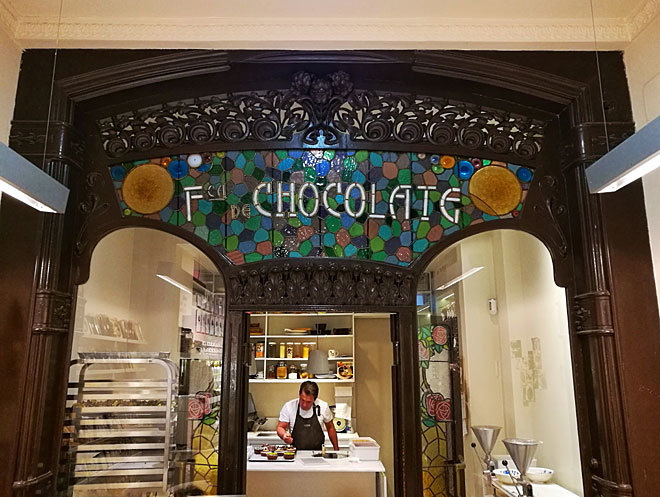

Corría el año 1928, cuando Don Panagiotis Yannoulas sube al vapor, que desde su amada Grecia, lo lleva con rumbo incierto hacia “La América”, en busca de un lugar donde poder progresar y tener una familia.
En esa época, los pasajeros que, como él, migraban de Europa sin mucho dinero, subían al primer barco hacia “América”, y no sabían muy bien si llegarían a Nueva York, a Montevideo ó a cualquier otro puerto. Luego de 45 días de navegación, quiso el destino (y el Capitán) que llegara al puerto de Buenos Aires